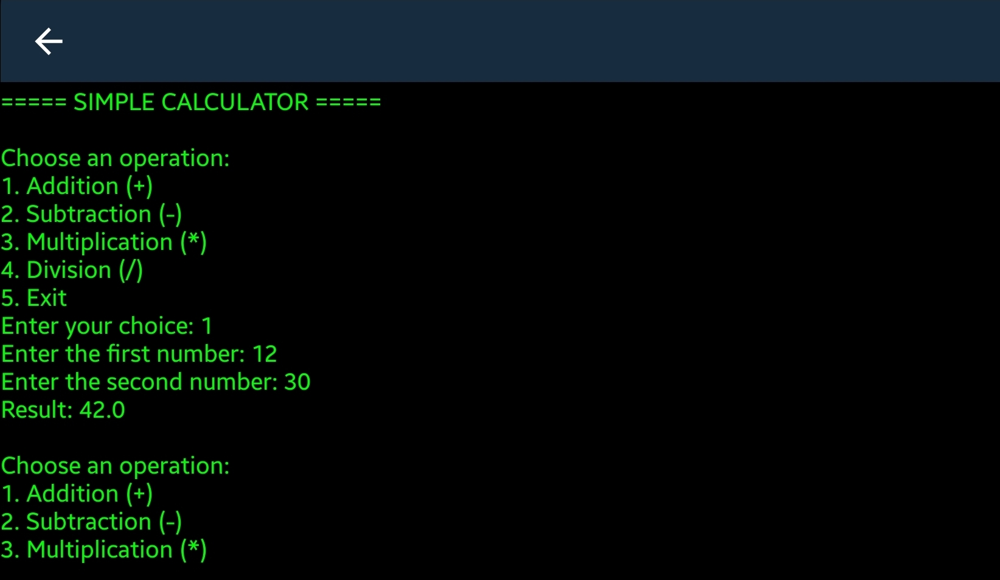

Simple Calculator

A simple calculator developed using Python. The project demonstrates basic programming concepts and arithmetic operations.
Watch the demo
How I built it
- Wrote down the operations the program needed to support.
- Read numbers and an operator from the user.
- Used conditional statements to select the operation.
- Displayed the calculated result.